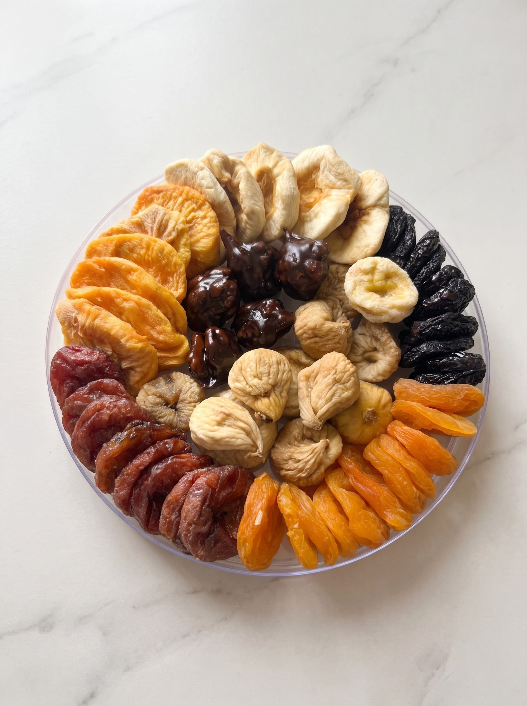

Любимые сухофрукты для чаепития, перекуса и семейного стола.
🌞 Особенности: Этот великолепный подарочный набор включает в себя широкий выбор сухофруктов: аппетитную курагу, сладкие красные и ароматные черные сливы, сочные персики, свежие яблоки, нежный инжир, а также уникальный чурчхелу. Мы гарантируем, что при их производстве не использовались никакие искусственные добавки или красители. 🍇 Польза для Здоровья: Каждый фрукт в этом наборе был тщательно отобран, чтобы обеспечить максимальную питательную ценность. 🎉 Прекрасный Подарок: Наш подарочный набор - это не только вкусное угощение, но и замечательный способ показать вашу любовь и заботу. Отличный выбор для дарения друзьям, родственникам или коллегам в любой особенный момент. 📦 Упаковка: Презентабельная и стильная упаковка размером 22x21x7 см делает этот набор идеальным выбором для подарка, который запомнится.
До отправки сухофрукты хранятся в охлаждаемых условиях.
Отправляем заказы из Армении. Сроки доставки указаны на Wildberries.